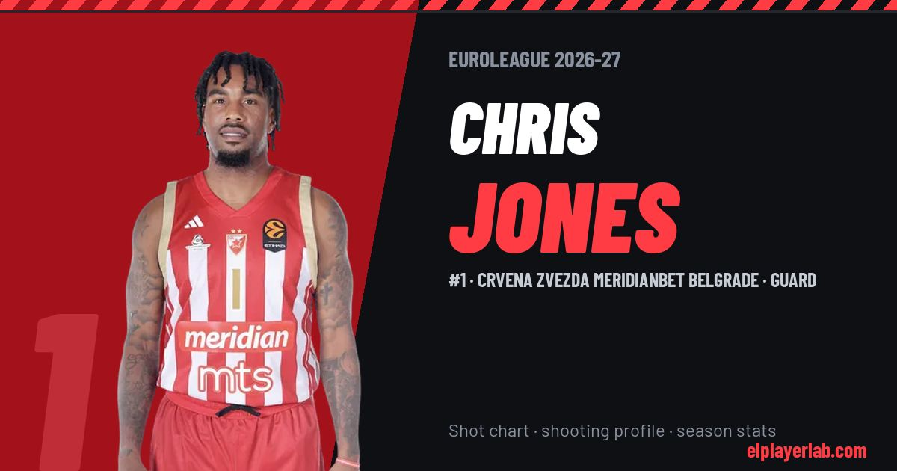

Crvena Zvezda Meridianbet Belgrade · Euroleague 2026-27
Chris Jones
#1 · Guard · Crvena Zvezda Meridianbet Belgrade · 2026-27 · 3 games · 7.3 pts · 1.0 reb · 5.3 ast a game

- Number
- 1
- Position
- Guard
- Height
- 188 cm
- Weight
- 99 kg
- Born
- 1993-04-10
- Country
- United States of America
Career
- Crvena Zvezda 2026-2027
- Santos del Potosí 2026
- Crvena zvezda 2026
- Hapoel Tel Aviv 2025-2026
- Valencia 2022-2025
- ASVEL 2021-2022
- Maccabi Tel Aviv 2020-2021
- Bursaspor 2019-2020
- Mons-Hainaut 2017-2019
- Starwings Basel 2016-2017
- Tuv Ajmag TuV Urgats 2015-2016
- North Texas (NCAA) 2011-2014
Euroleague Player Lab: shot charts, shooting profiles and season stats for every player, rebuilt after every game.